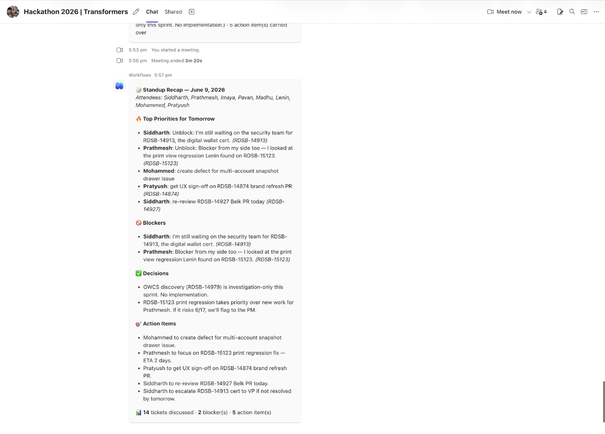
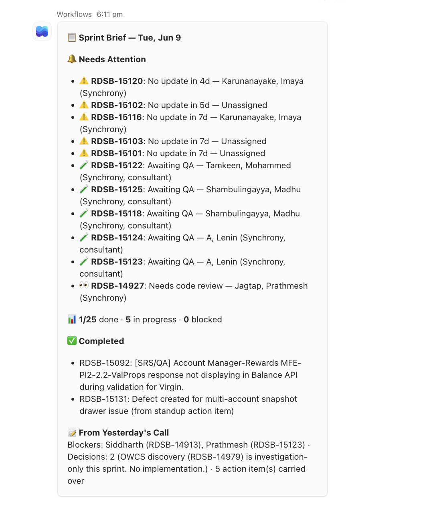
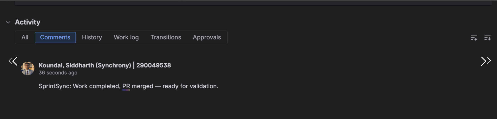

The Transformers
Updates are spoken once.
Then manually rebuilt everywhere.
A team member manually turns engineering updates into Jira comments, status pages, and follow-ups.
An engineer hunts through Bitbucket to confirm which pull requests actually merged.
Blockers, decisions, action owners, and context get lost between disconnected tools.
Repetitive, delayed, and easy to get wrong. Dashboards show ticket fields, but not why work is blocked, who committed to act, or what the team decided.
Engineering work,
kept in sync.
Conversations and system events become verified status, owned actions, and targeted updates.
Tell Flow Agent once.
It closes the loop.
Listen naturally
Chat, transcript, ticket move, or PR merge.
Fetch live truth
Cross-check Jira and Bitbucket before acting.
Update the work
Post targeted Jira comments and preserve owned actions.
Brief the team
Action-first Teams summary before the next meeting.
Two modes.
One agentic system.
From messy conversation
to coordinated action.


It keeps working
after everyone leaves.
Listen and understand
FlowSync captures conversations and workflow events, resolves ticket context, and identifies the next handoff.

Automation you can trust.
No fabricated status. FlowSync verifies Jira and Bitbucket first.
Every Jira transition stays human-controlled.
Preview background automation before it writes anything.
One workflow, many surfaces
with blockers captured, handoffs visible, and every action traceable.
Stop reporting the work.
Let the work report itself.
Fewer status meetings. Faster decisions. Nothing important lost between tools.
See the complete workflow
in action.
Watch FlowSync turn engineering conversations and live system signals into coordinated action.
▶ Watch Demo Recording